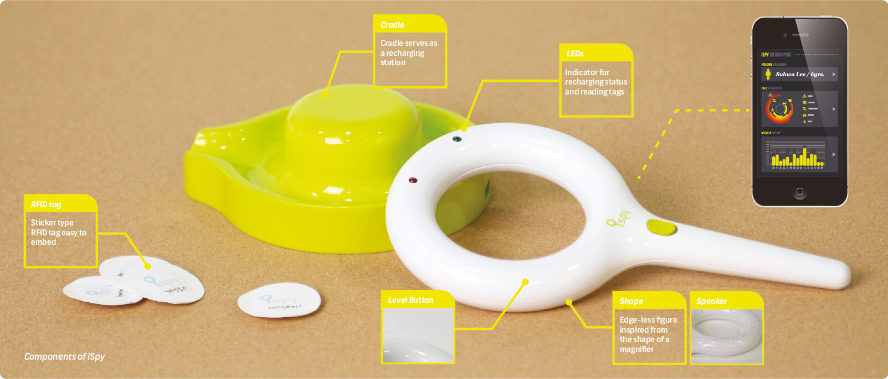
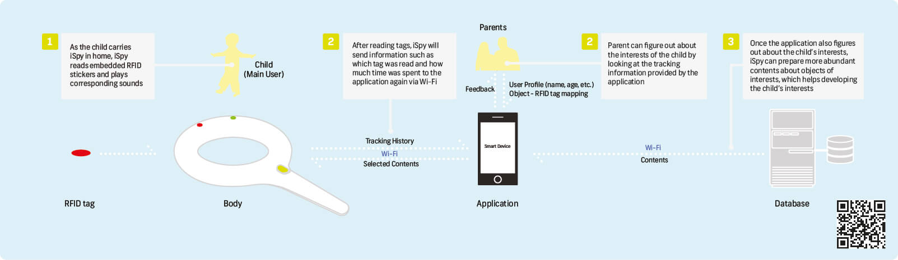
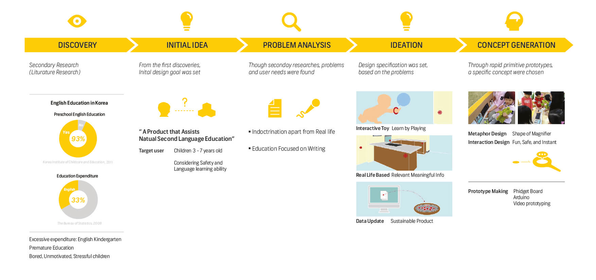
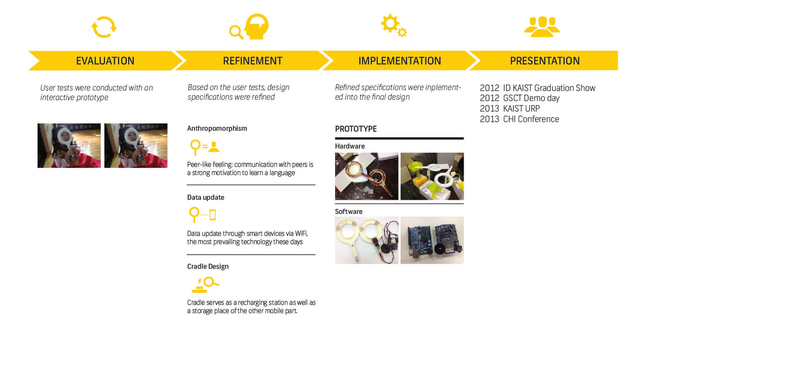

iSPY
How can a language be taught in a natural and playful way?
The concept introduces an interactive language learning toy for a natural language education, by utilizing surrounding environment as a learning resource which evolves over time.
Bachelor Thesis Project / KAIST / 2012
CONTRIBUTION
Individual Project, all processes from problem definition, concept development, usertest, and working hardware / software rototyping
.jpg)
CONCEPT
What is it?
iSpy is a language learning toy for preschool children.
The idea was initially inspired from the fact that the natural process of learning a language begins with listening the language. The design aimed to encourage autonomous learning without a major parental guidance, and to trigger attachment to the toy overtime.
How does it work?
Whenever iSpy reads RFID stickers placed everywhere in the house, it plays embedded messages. The contents can be upgraded by receiving data from smart devices via Wi-Fi. iSpy transmits RFID tag-tracking information, which is a learning history of a child, to connected smart devices. It will help parents to discover the child’s interest.
PRODUCT DESIGN
SYSTEM DESIGN
DESIGN PROCESS
 PROTOTYPE
The prototype was embedded with RFID reader module, Arduino wave shield with SD card slot, Speaker and Arduino which controls everything else. The RFID Reader Module reads RFID tags and plays matching audio files. RFID antenna can be coiled inside along with the shape of a device, providing a better reading range. The size of a microprocessor, speaker, and RFID read module can be reduced when manufactured than the prototype.